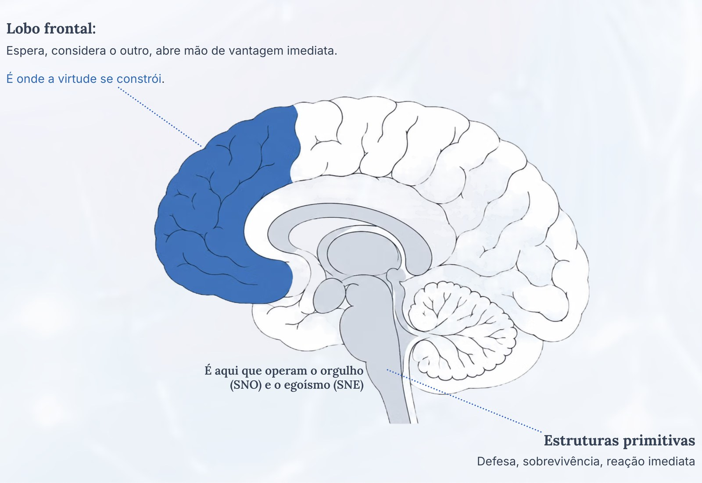

As Três Ondas do Trabalho · Eduardo Casarotto
O trabalho está mudando. Mas muitas organizações ainda são administradas para um mundo que já não existe.
A Terceira Onda do Trabalho, na leitura de Eduardo Casarotto, descreve uma evolução das motivações no trabalho: sobrevivência, importância e propósito. Essa lente ajuda a questionar por que tantas empresas seguem organizadas em torno do medo e do status.
Em paralelo, referências internacionais já defendem organizações e um futuro do trabalho centrados no ser humano.
A primeira onda: trabalhar para sobreviver
Essa onda vai dos primeiros seres humanos até boa parte da era industrial, e em muitos lugares ela continua.
Aqui o trabalho existe por um motivo só: comer, se proteger e continuar vivo. Não tem sentido, não tem realização, não tem escolha. Tem necessidade.
Para explicar essa onda, o autor usa uma analogia com as funções de sobrevivência do cérebro, as mais antigas do sistema nervoso. Nessa lógica, tudo se resume a dois estados: ameaça ou segurança.
Isso não é história antiga
Toda vez que alguém trabalha com medo de ser demitido no mês que vem, ou com a conta de luz vencendo, ela volta, na leitura do autor, para a lógica da primeira onda, não importa o cargo dela.
Sob ameaça, o raciocínio tende a ficar mais pobre, a decisão mais apressada, e a reação toma o lugar da resposta. É por isso que insegurança no emprego tende a derrubar a qualidade do trabalho, e não só o humor de quem trabalha.
A segunda onda: trabalhar para ser importante
Um marco costuma ser lembrado para essa virada.
Entre 1924 e 1932, na Hawthorne Works, fábrica de equipamentos telefônicos da Western Electric perto de Chicago, uma série de estudos tentou descobrir o que fazia a produção variar. Os resultados, depois associados a Elton Mayo e a pesquisadores de Harvard, chamaram atenção para fatores sociais: a atenção recebida, as relações no grupo, o sentimento de participar.
O salário não explicava tudo. Ser visto e fazer parte também pesava.
A interpretação desses estudos é discutida até hoje. Na leitura de Eduardo Casarotto, foi a partir desse movimento que se consolidou uma arquitetura de gestão baseada em reconhecimento: títulos, hierarquias, vaga exclusiva no estacionamento, premiação do mês, promoção, símbolo de status.
Foi um avanço real em relação ao modelo anterior. Mas tem um problema estrutural que quase ninguém enxerga.
Ah, mas reconhecer as pessoas não é bom?
É, e a Humanização 2.0 não propõe deixar de reconhecer ninguém. Reconhecimento é necessidade humana legítima.
O problema é outro: quando a empresa constrói toda a motivação em cima disso, ela passa a alimentar o tempo todo aquilo que a Humanização 2.0 chama de orgulho: a necessidade antiga de ser importante para ser aceito, e de ser aceito para sobreviver.
E aí vem o efeito colateral: competição entre quem precisa colaborar, inveja entre pares, conhecimento centralizado como fonte de poder, comportamento territorial com equipe e cliente.
Nada disso é falha de caráter das pessoas. É o ecossistema que a própria empresa montou.
A terceira onda: trabalhar por propósito
É a onda que está começando agora, e a que gera mais mal-entendido.
Nela, a pessoa não trabalha só para sobreviver, nem só para ser reconhecida. Ela trabalha porque aquilo que faz tem sentido, tem impacto e tem relação com o que ela acredita.
Importante: a terceira onda não anula as anteriores. Continua sendo preciso pagar as contas, e continua sendo bom ser reconhecido. O que muda é a ordem de importância entre essas coisas.
Quando existe propósito, as outras necessidades se organizam de um jeito mais saudável. Quando não existe, o salário e o cargo precisam compensar sozinhos algo que eles não conseguem compensar.
Ah, mas isso não é frescura de geração nova?
Essa é a leitura mais comum, e ela custa caro para quem a faz.
A busca por propósito não é preguiça nem falta de compromisso. É o sinal de uma mudança que levou milênios para acontecer.
Na leitura do autor, as empresas que operam só nas duas primeiras ondas tendem a ter mais dificuldade para reter gente boa. Elas oferecem dinheiro e status para pessoas que já não se movem só por isso.
Por que isso importa para RH, saúde e gestores
Se as motivações e as expectativas das pessoas mudam, as organizações também precisam examinar as suas estruturas, os seus critérios de reconhecimento e as suas formas de gestão. Sistemas Humanizados é a proposta que o Instituto estuda para essa transformação.
Uma convergência de tema, não uma comprovação
A Terceira Onda é um modelo interpretativo do autor. Ela não é a origem nem a posição oficial da ISO, da OIT ou da OMS. Mas o tema é o mesmo: organizações e trabalho centrados no ser humano.
ISO 27500 e ISO 27501
2016 e 2019, Organização Internacional de Normalização
Princípios para organizações centradas no ser humano e orientações para que gestores os levem à estratégia e aos processos.
OIT
2019, Declaração do Centenário para o Futuro do Trabalho
Defende uma abordagem do futuro do trabalho centrada no ser humano.
OMS
2022, Diretrizes sobre saúde mental no trabalho
Recomendações que incluem intervenções na organização do trabalho, além de ações com gestores e trabalhadores.
Referências independentes, cada uma com o seu escopo. Nenhuma delas valida ou certifica os Sistemas Humanizados. Veja o que cada documento propõe.
O que as pesquisas mostram sobre isso
As pesquisas abaixo não testam o modelo das três ondas. Mas mostram fenômenos que conversam com ele.
Perda de sentido e burnout andam juntos
Um estudo com 1.637 profissionais de um centro médico universitário mediu duas coisas ao mesmo tempo: quanto sentido cada um enxergava no próprio trabalho, e a presença de burnout.
Na mesma instituição, a diferença entre quem sempre via sentido no trabalho e quem nunca via foi enorme.
É um estudo transversal: mostra associação, não prova que a falta de sentido cause o burnout.
E um estudo longitudinal sobre o tema mostrou que a relação vai nos dois sentidos: mais sentido hoje reduz o burnout depois, e burnout alto derruba o sentido em seguida. Os autores chamam isso de espiral de perda.
Há ainda um achado que contraria o senso comum da gestão: uma pesquisa de psicologia organizacional encontrou que incerteza sobre o próprio papel, metas pouco claras e falta de direção da liderança mostraram relação mais forte com o burnout do que a carga de trabalho. Produzem a sensação de trabalhar sem rumo.
A perda de sentido é mais comum do que a exaustão
Uma pesquisa com mil executivos nos Estados Unidos, conduzida pela Corporate Balance Concepts, separou os dois quadros:
Na França, um levantamento sobre sentido no trabalho encontrou que 18% dos trabalhadores consideram ter um emprego inútil.
E a nova geração não está blefando
O levantamento da Deloitte com a Geração Z e os Millennials, feito em vários países, mostra que a busca por propósito não é discurso:
86% e 89%
da Geração Z e dos Millennials, respectivamente, dizem que ter senso de propósito no trabalho é importante para a satisfação e o bem-estar deles.
50% e 43%
já recusaram um projeto ou uma tarefa por não estar alinhado com o que acreditam.
44% e 40%
já recusaram uma proposta de emprego por questões éticas, ambientais ou de cultura da empresa.
75%
consideram o impacto social da organização um fator relevante na decisão de trabalhar ali.
Entre quatro e cinco em cada dez jovens já abriram mão de uma oportunidade profissional por desalinhamento de valores. E fizeram isso num contexto de inflação e custo de vida alto.
São sinais compatíveis com o que a terceira onda descreve.
Fontes
- Sentido no trabalho e burnout. Kowalski TJ, Pendleton J, Bhaskar A, Boothe D. Loss of Meaning at Work Associated with Burnout Risk in Academic Medicine. Southern Medical Journal, 2021;114(3):139-143. Análise transversal com 1.637 profissionais da University of Arkansas for Medical Sciences, com o Copenhagen Burnout Inventory. A prevalência de burnout cresceu a cada nível de perda de sentido: 13%, 26%, 57%, 84% e 94%, do nível mais alto ("sempre") ao mais baixo ("nunca"). PubMed
- Espiral de perda. Estudo longitudinal sobre a dinâmica entre satisfação de necessidades psicológicas, sentido no trabalho e burnout, com o Burnout Assessment Tool: mais sentido reduz o burnout posterior, e burnout elevado derruba o sentido em seguida. Burnout Assessment Tool
- Incerteza pesa mais que carga de trabalho. Leduc JG, Boies K. On Uncertainty: How Goals Influence Work Meaningfulness and Burnout. John Molson School of Business, Concordia University, 2024. Pesquisa com 598 empregados: a incerteza no trabalho mostrou relação bem mais forte com o burnout do que estressores comuns como volume de trabalho, responsabilidade, complexidade e pressão de prazo. As principais fontes de incerteza foram ambiguidade de papel, conflito de papel e ausência de visão da liderança. Concordia University
- Brownout e burnout entre executivos. Levantamento da Corporate Balance Concepts, empresa americana de coaching executivo dirigida por Michael E. Kibler, com mil executivos: 5% apresentavam burnout e 40%, brownout. O conceito foi apresentado por Kibler em artigos da Harvard Business Review. Harvard Business Review
- Emprego inútil na França. Estudo do Kantar TNS para a Randstad sobre sentido no trabalho: 18% dos franceses têm a sensação de ocupar um emprego inútil. Courrier Cadres
- Geração Z e Millennials. Deloitte Global, 2024 Gen Z and Millennial Survey, com mais de 22.800 respondentes em 44 países. Propósito importante para satisfação e bem-estar: 86% da Geração Z e 89% dos Millennials. Já recusaram uma tarefa ou projeto por questão de ética ou crença: 50% e 43%. Já recusaram um empregador: 44% e 40%. Deloitte Global
As três ondas e a analogia com o cérebro
Para explicar as ondas, o autor usa uma analogia com funções do cérebro relacionadas a sobrevivência, reconhecimento social e decisão orientada por propósito. É uma analogia didática: o cérebro funciona de forma integrada, e nenhuma motivação mora numa única região.
-
1
Sobrevivência · funções mais antigas
Ligada, na analogia, às funções vitais e de alerta. Opera em dois estados: ameaça ou segurança.
Na empresa: quando o trabalho é vivido como ameaça - medo de demissão, aperto financeiro, cobrança que assusta - é essa parte que dirige o comportamento. E, sob ameaça, o raciocínio elaborado perde espaço.
-
2
Importância · emoção e vínculo
Ligada, na analogia, às estruturas associadas às emoções, à memória emocional e às relações sociais. Representa a necessidade de pertencer, de ser aprovado e de ter status.
Na empresa: quando a motivação vem de título, premiação e hierarquia de prestígio, é essa necessidade que está sendo acionada. E ela tende a criar dependência emocional da aprovação da empresa.
-
3
Propósito · planejamento e valores
Ligada, na analogia, às funções do lobo frontal: planejamento, decisão consciente e capacidade de agir por valores.
Na empresa: na leitura do autor, ambientes que favorecem o propósito produzem mais colaboração, mais inovação e menos violência entre as pessoas. É o que a maioria das empresas ainda não aprendeu a estimular.
O desafio das organizações hoje é sair de uma gestão que fala com o medo, a escassez e o status para uma gestão que fala com o propósito.
E isso não é escolha de estilo. Para o autor, é o que decide se a empresa vai colher competição ou colaboração.

O choque de gerações, explicado pelas ondas
Um dos assuntos mais falados e menos entendidos do trabalho hoje.
As gerações mais antigas
Formadas numa cultura de trabalho árduo, perseverança, respeito à hierarquia e identidade grudada no cargo e na empresa.
Tendem a ler a recusa dos mais jovens em aceitar condições ruins como falta de compromisso.
As gerações mais novas
Cresceram questionando a autoridade e procurando autenticidade e sentido.
Trazem uma riqueza real, que é a recusa de trabalhar só por sobrevivência ou status. E trazem uma limitação: menos tolerância à frustração e dificuldade de persistir diante de obstáculo.
Repare que os dois lados estão certos em parte, e é por isso que a discussão nunca termina.
O mais velho não entende por que alguém prefere ganhar menos fazendo algo com sentido. E esse julgamento é, em si, produto da onda em que ele foi formado.
O mais novo enxerga o que falta, mas nem sempre tem estrutura para construir o que propõe.
O efeito pêndulo
A Humanização 2.0 explica esse choque com uma ideia simples:
Quando uma geração é submetida a um extremo, a geração seguinte vai para o extremo oposto.
Excesso de autoritarismo, de punição e de rigidez de um lado produz, do outro, excesso de permissividade e recusa de qualquer desconforto. O pêndulo não para no meio: ele atravessa.
Na leitura do autor, esse ciclo leva cerca de uma geração. E só se resolve quando o pêndulo encontra o ponto de equilíbrio, o que exige trabalho deliberado - não acontece sozinho.
Onde está o equilíbrio
Não é na submissão ao trabalho duro sem sentido. E também não é em abandonar responsabilidade em nome do bem-estar individual.
Está em juntar as duas coisas: o valor do esforço de verdade e a busca de sentido. Trabalhar com profundidade, com presença e com propósito.
Para isso, quem tem experiência precisa parar de ler o valor dos mais jovens como fraqueza. E quem é mais jovem precisa incorporar o que a experiência ensina: persistir, aprender com o erro e construir com paciência.
Onde se estuda isso
As três ondas, as faixas de evolução organizacional, os cinco filtros e os 34 componentes de um sistema humanizado são o conteúdo da Pós-graduação em Sistemas Humanizados.
São 15 módulos e 360 horas, com certificação da FACEO - Faculdade Centro Oeste, instituição credenciada pelo MEC. E há outros dois caminhos, conforme o seu momento:
Aula aberta · gratuita
Assista a Eduardo Casarotto aplicar a proposta
Duas aulas completas: uma sobre a NR-1 e os riscos psicossociais, outra sobre o RH e a descrição de cargos.
Assistir à aula sobre a NR-1Livro

Sistemas Humanizados · Humanização 2.0
Para estudar a obra, seus fundamentos e os instrumentos apresentados por Eduardo, com manuais prontos e aulas bônus de acesso imediato.
Conhecer o livroPós-graduação lato sensu
Pós-graduação em Sistemas Humanizados
Para estudar em profundidade, num programa acadêmico com aulas, avaliações, TCC e certificação.
Conhecer a pós-graduaçãoA Humanização 2.0 como resposta à terceira onda
A terceira onda não é moda nem concessão às gerações mais novas. É uma mudança na consciência humana sobre o significado do trabalho, que levou milênios para se construir.
E aqui está o problema prático: a maior parte das organizações ainda está montada para a segunda onda. A arquitetura de motivação delas, com título, ranking, premiação e status, fala com a necessidade de importância, não com o propósito.
A Humanização 2.0 é a resposta a isso. Não como programa de bem-estar, e sim como sistema:
Ambientes construídos a partir das 51 necessidades humanas. Regras que favorecem o propósito em vez do medo. E o reconhecimento de que a busca por propósito é força produtiva de verdade, não frescura.
É por isso que a Humanização 2.0 não trabalha com as pessoas, e sim com o que está escrito. Porque é o escrito que decide qual motivação a empresa vai acionar todos os dias.
Os cinco filtros, os 34 componentes de um sistema humanizado, a Terceira Competência e o debate internacional estão na página principal dos Sistemas Humanizados: